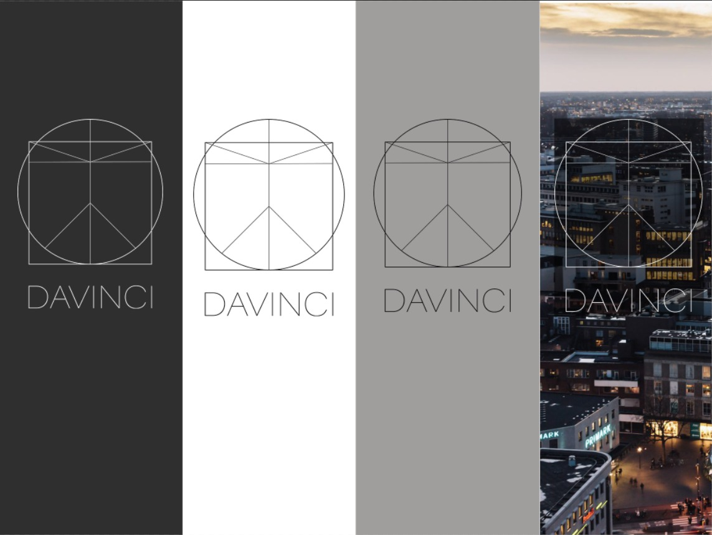
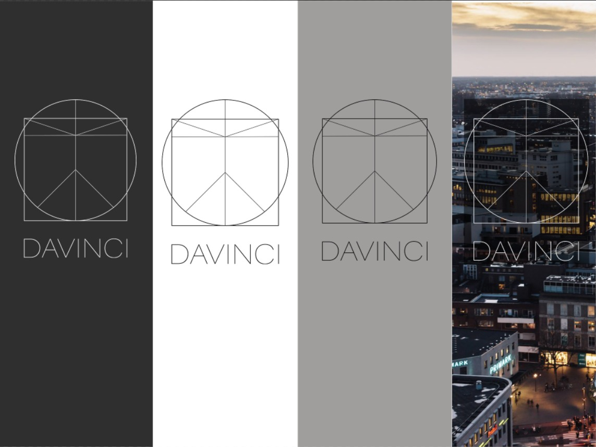

Logo
This section features the logos from Davinci and the way in which you need to use them.
There are three logo variants from Davinci:
This section features the logos from Davinci and the way in which you need to use them.
There are three logo variants from Davinci: